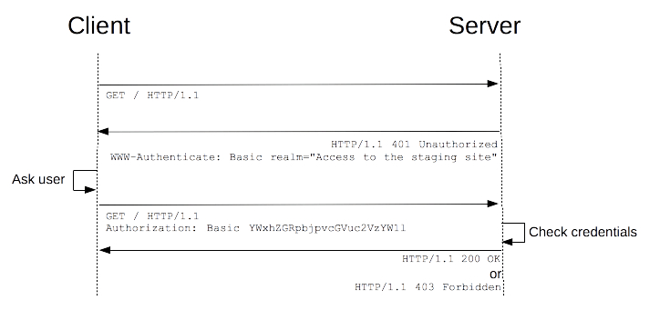

网络协议
一、http token使用方式
token一般会放在header中使用Authorization的并带入存取的token，basic和bearer是token的类型。
1、Basic Token
是http最基本的认证方式，使用明码的方式传输password、uid。设计面并未考虑到TLS认证。
一般来说，在存取资源服务器的时候，需要预先带入token，如果未能成功验证通过时，Response则会回应相关的资讯，带有WWW-Authenticate HEADER，并带有Realm资讯。

Key words：
- Realm（Protection Space）：Token有效的网域。
- charset：用于设定schema的编码，只能允许utf-8一种。
2、Bearer Token
是以HTTP 1.1 TLS下去定义的Token，因此使用Bearer必须具备TLS环境。延续使用Basic Token 的WWW-Authenticate、Authorization HEADER，而proxy authentication不延续使用。
3、使用Token的方式
- 使用Authorization HEADER
- 使用Form Body：使用时不建议将Token加入Body。
- 直接使用在URI：一般不会使用这种方法，除非不可以使用header，或者protect resource支援该方法。
4、Token Response Error
使用Token时，http code 为200时代表成功。
Basic Token：当授权为不通过时，回传401 code并告知哪个Protect Scope错误。
HTTP/1.1 401 Unauthorized Date: Mon, 04 Feb 2014 16:50:53 GMT WWW-Authenticate: Basic realm="WallyWorld"
Bearer Token：当授权不通过时，回传400，401，403 code，并根据状况回传对应的错误
| Error Type | 说明 |
|---|---|
| invalid_request | Response 400 error code，表示Request 缺少参数或者多了一些参数等错误 |
| invalid_token | Response 401 error code，表示Token 错误，通过不了认证 |
| invalid_scope | Response 403 error code，表示Token无权存取该Protect Resource |
HTTP/1.1 401 Unauthorized WWW-Authenticate: Bearer realm="example", error="invalid_token", error_description="The access token expired"
5、总结
Basic Token主要还是使用在网域上的防护，而Bearer则是针对protect resource的存取，主要还是使用在Auth 2.0上，且一定要在TLS环境(HTTPS)使用。